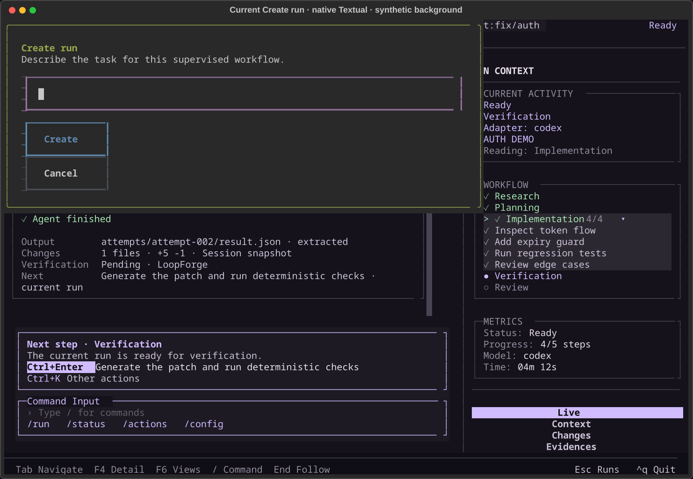

New Run / Task : deux parcours à comparer
Même tâche, mêmes critères, même identité terminal. A réunit la saisie ; B la répartit en deux étapes. Tu peux parcourir toutes les maquettes puis préparer un seul retour.
Maquettes statiques avec données fictives. Les boutons dessinés dans les images illustrent le futur parcours. Seuls les contrôles de cette galerie fonctionnent.
Deux façons de préparer la même tâche
A · Tâche et critères réunis · 120 × 40
Une page dédiée ; description multiligne et critères visibles ensemble. Le pied reste fixe.
Lire la transcriptionB · Description puis critères · 120 × 40
Deux étapes dans le même parcours ; retour à la tâche sans perte de saisie. Création seulement à la seconde étape.
Lire la transcription| Point à comparer | A · Saisie réunie | B · Saisie progressive |
|---|---|---|
| Structure | Tâche et critères dans la même page. | Description, puis critères ; retour possible. |
| Point fort | Relire et ajuster l’ensemble sans changer d’étape. | Se concentrer sur une question à la fois. |
| Compromis | Plus de contenu à parcourir en petit terminal. | Une transition supplémentaire pour les tâches simples. |
| Création | « Create run » au pied de la page. | « Continue » ne crée rien ; « Create run » à l’étape 2. |
| Critères absents | Création possible avec une tâche ; complétion requise dans Task avant l’approbation. | |
| Approbation | Revue de Task après création, puis confirmation explicite. Research reste une action suivante. | |
Les champs portent les mêmes noms dans les deux variantes. L’interface produit reste en anglais, comme Live ; les commentaires de revue sont en français.
A · Tout préparer dans une page
La description multiligne et les critères restent ensemble. En grande largeur, les valeurs du projet et la suite du parcours occupent une colonne secondaire. En terminal étroit, le formulaire défile et le pied d’action reste accessible.
A · Tâche et critères réunis · 120 × 40
Une page dédiée ; description multiligne et critères visibles ensemble. Le pied reste fixe.
Lire la transcriptionA · Tâche et critères réunis · 80 × 24
Une page dédiée ; description multiligne et critères visibles ensemble. Le pied reste fixe.
Lire la transcriptionA · 60 colonnes en ASCII et grande largeur
A · Tâche et critères réunis · 60 × 24
Une page dédiée ; description multiligne et critères visibles ensemble. Le pied reste fixe.
Lire la transcriptionA · Tâche et critères réunis · 160 × 40
Une page dédiée ; description multiligne et critères visibles ensemble. Le pied reste fixe.
Lire la transcriptionB · Décrire, puis définir la réussite
La première étape réserve l’espace à la tâche. La seconde demande les critères. Revenir à la description conserve les deux saisies ; aucun run n’est créé avant l’action finale.
B · Description puis critères · 120 × 40
Deux étapes dans le même parcours ; retour à la tâche sans perte de saisie. Création seulement à la seconde étape.
Lire la transcriptionB · Description puis critères · 120 × 40
Deux étapes dans le même parcours ; retour à la tâche sans perte de saisie. Création seulement à la seconde étape.
Lire la transcriptionB · Critères reportés et petits terminaux
B · Description puis critères · 120 × 40
Deux étapes dans le même parcours ; retour à la tâche sans perte de saisie. Création seulement à la seconde étape.
Lire la transcriptionB · Description puis critères · 80 × 24
Deux étapes dans le même parcours ; retour à la tâche sans perte de saisie. Création seulement à la seconde étape.
Lire la transcriptionB · Description puis critères · 60 × 24
Deux étapes dans le même parcours ; retour à la tâche sans perte de saisie. Création seulement à la seconde étape.
Lire la transcriptionTask · Une suite commune aux deux designs
La création ouvre la tâche du run enregistré. Si un critère manque, l’action proposée est « Save criterion ». Sinon, l’action moteur permet de relire puis d’approuver la tâche. Le Command Input du run est conservé.
Commun · Task dans le run créé · 120 × 40
La tâche créée se consulte dans Live à l’étape Task. Command Input conservé ; approbation explicite via le dispatch existant.
Lire la transcriptionCommun · Compléter une tâche existante · 120 × 36
Remplace le libellé trompeur Save proof par Save criterion. Un ajout utilise la complétion existante, sans créer un autre run.
Lire la transcriptionConfirmation explicite de l’approbation
Commun · Confirmation de la tâche · 80 × 24
Commun · Confirmation de la tâche · État proposé, sans opération réelle.
Lire la transcriptionLes critères sont des résultats attendus. Leur présence ne signifie pas que des contrôles ont été exécutés. La revue et la publication conservent leurs propres étapes.
États, erreurs et sortie de saisie
Le texte reste disponible pendant une erreur récupérable. Une création en cours ne peut pas être relancée. Quitter une saisie modifiée demande une décision ; quitter un run créé conserve ce run.
Commun · Création en cours · 80 × 24
Commun · Création en cours · État proposé, sans opération réelle.
Lire la transcriptionCommun · Erreur récupérable · 80 × 24
Commun · Erreur récupérable · État proposé, sans opération réelle.
Lire la transcriptionValidation, abandon, changement de projet et tâche subjective
A · Tâche et critères réunis · 120 × 40
Une page dédiée ; description multiligne et critères visibles ensemble. Le pied reste fixe.
Lire la transcriptionCommun · Quitter une saisie modifiée · 80 × 24
Commun · Quitter une saisie modifiée · État proposé, sans opération réelle.
Lire la transcriptionCommun · Changement du projet ciblé · 80 × 24
Commun · Changement du projet ciblé · État proposé, sans opération réelle.
Lire la transcriptionCommun · Travail subjectif en profil autonomous · 120 × 40
Le validateur moteur pilote l’affichage de la grille subjective. Aucun score de qualité ni critère inventé automatiquement.
Lire la transcriptionUne grille d’évaluation apparaît avant création uniquement quand le contrat moteur l’exige. Les messages précis d’échec et les valeurs de configuration proviendront du moteur, pas de textes prédéfinis dans la vue.
Ce qui guide la refonte
Grille terminal et cadres carrés ; lavande réservée au focus ; orange pour l’attention et « Approval required » ; labels persistants, saisie multiligne, navigation complète au clavier, erreurs avec issue claire. Les critères peuvent être reportés, leur nécessité avant approbation reste visible.
La maquette prévoit un brouillon en mémoire pendant le parcours. Elle ne promet aucune sauvegarde après fermeture de l’application. Le projet est identifié par son nom et son chemin ; un changement de contexte suspend la création.
Écran actuel et documentation de conception
Capture native du composant actuel de saisie, ouverte sur une fixture synthétique. La suite des images de cette galerie reste une proposition statique.


Ton retour groupé
Aucun design n’est présélectionné. Tes choix restent dans cet onglet jusqu’au rechargement. « Préparer mon retour » produit un texte à copier ; l’export télécharge ce texte sur demande.
Ce retour porte sur le design. Il ne déclenche aucune implémentation ni approbation du moteur.